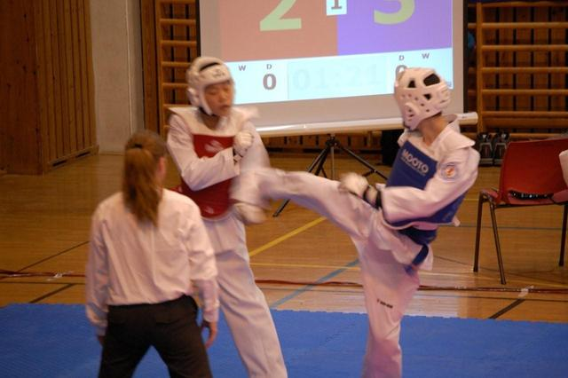

Innlegg
Suksess på Norges Cup!

Ringerike Taekwondo-klubb vant i helgen tre medaljer i årets første Norges Cup i Gruehallen i Solør.
Vi gratulerer og satser på å delta med ennå flere neste gang i april da NC 2 arrangeres i Oslo.
Arkivversjon
Lesbar arkivutgave av det tidligere nettstedet
Innlegg

Ringerike Taekwondo-klubb vant i helgen tre medaljer i årets første Norges Cup i Gruehallen i Solør.